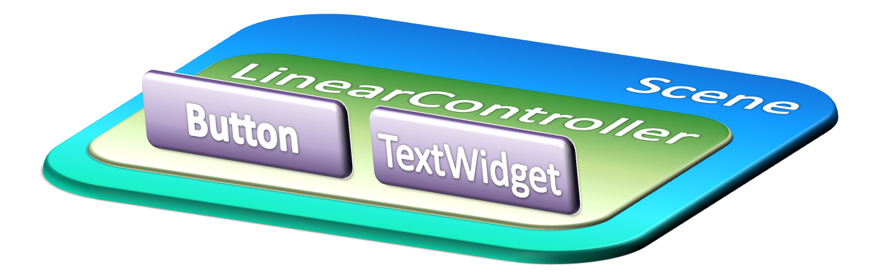

In a gaia application, the user interface is controled by Scene. Scene contain WidgetController such as LinearController, AbsoluteController or ScrollWidget ...etc. WidgetController contains widget objects to dispaly user interface.

Widget objects are the basic units of user interface expression on the gaia platform. The Widget class serves as the base for subclasses called "Widgets," which offer fully implemented UI objects, like text fields and buttons. The WidgetController class serves as the base for subclasses called "controller," which offer different kinds of layout architecture, like linear and absolute.
A Widget object is a data structure whose properties store the controller parameters and content for a specific rectangular area of the screen. A Widget object handles its own measurement, layout, drawing, focus change, scrolling, and key/gesture interactions for the rectangular area of the screen in which it resides. As an object in the user interface, a Widget is also a point of interaction for the user and the receiver of the interaction events.
This section describes some of the more common types of layout objects to use in your applications. Like all layouts, they are subclasses of WidgetController. Gaia provides common type include LinearController and AbsoluteController. To learn about some of the different kinds of WidgetController used for a layout, read Layout Controller Objects.
Gaia is provided many types of Widgets and WidgetControllers, each of which is a descendant of the Widget class.
| Component | Descripute |
|---|---|
| LinearController | LinearController containers Widgets in a linear direction, either vertically or horizontally. |
| AbsoluteController | AbsoluteController clets you specify exact locations (x/y coordinates) of its children. |
| ScrollWidget | A vertically scrolling column of elements. |
| TextWidget | Displays text to the user. |
| EditWidget | When the user presses an EditWidget, a software keypad is displayed for entering input. |
| Button | Represents a push-button widget. Push-buttons can be pressed, or clicked, by the user to perform an action. |
| CheckBox | A checkbox is a specific type of two-states button that can be either checked or unchecked. |
| RadioButton | A radio button is a two-states button that can be either checked or unchecked. |
| ToggleButton | A toggle button displays checked/unchecked states and is default accompanied with the text "ON" or "OFF". |
| ImageWidget | Displays an arbitrary image, such as an icon. |
| ImageButton | Displays a button with an image (instead of text) that can be pressed or clicked by the user. |
| ProgressBar | A progress bar displays a bar to the user representing how far the operation has progressed. In the indeterminate mode, a progress bar shows a cyclic animation without an indication of progress. |
| SeekBar | A SeekBar has a draggable thumb. The user can touch the thumb and drag left or right to set the current progress level. |
| RatingBar | A RatingBar shows a rating in stars. The user can touch or drag it to set its rating. |
| ListWidget | Displays a scrolling single column list. |
| GridWidget | Displays a scrolling grid of m columns and n rows. |
Once you've grappled the fundamentals of creating a user interface, you can explore some advanced features for creating a more complex application interface.
Customize Widget
Building your UI, based on the fundamental layout classes: Widget and WidgetController. To start with, the platform includes a variety of prebuilt Widget and WidgetController subclasses.
Adapters
Sometimes you'll want to populate a WidgetController with some information that can't be hard-coded, instead, you want to bind your widget to an external source of data. To do this, you use an AdapterWidget as your WidgetController and each child Widget is initialized and populated with data from the Adapter.